User guide — every screen, every scenario
The RaceDay & Driven
Field Manual
A step-by-step walkthrough of RaceDay and the Driven driver app, with a real screenshot of every screen.
How to use this guide
This guide covers three pieces of software, documented side by side:
| App | What it is | Status |
|---|---|---|
| V1 | The classic RaceDay app. Tracks that started on it can keep using it as long as they like. | Live at /raceday/ (existing tracks) |
| V2 | A ground-up rewrite of the same app — same features, reworked navigation and screens (a single-screen sign-up, a "Race Control" status bar, three scoring styles instead of one). | Live at /raceday2/ — the default for new tracks |
| Driven | A separate, driver-owned companion app. A racer builds one profile that follows them across every track that runs RaceDay. | Live at /driven/ |
New to RaceDay? Start with Part 2 — that's the version new tracks get. Parts 1 and 2 mirror each other section-for-section, so if you're moving over from the classic app, jump between V1 → Adding drivers and V2 → Adding drivers and the steps line up. Part 4 is flagged separately because it's the one workflow every track eventually needs and gets wrong the first time: making sure points from a combined or missed race night add up correctly.
Every screenshot in this guide was captured from the real, running app with sample data — a fictional "Thunder Ridge Speedway" / "Copper Valley Motorplex" — so what you see here is exactly what appears on screen, not a mockup.
Classic RaceDay (V1)
The original app, still running at tracks that started on it. Covers the full sign-up-to-standings loop, every device role, and the admin toolbox.
Setting up a new track V1
A five-step wizard that only appears once — the very first time RaceDay is opened on a brand-new admin device.
- Open RaceDay on a fresh device for the first time. The setup wizard opens automatically — it never appears again on this device once a track name is saved, and it never appears on a device that joins an existing track through a QR/link code.
- Step 1 — Welcome. A one-screen overview of the four tabs a track uses every night:
Sign up, Lineups, Results, Points. Tap
Next. - Step 2 — Your track. Type the track name (required —
Nextstays disabled until this is filled in). Optionally upload a logo, and fill in the length, surface (dirt/pavement), configuration (oval/road course), and a short history — these are cosmetic, shown to spectators, and can be skipped. - Step 3 — Race classes. Every class racing tonight gets a row here — rename the
defaults or tap
+ Add a classfor more. Each class can also carry spectator-facing info (age group, specs, description) via an expandable panel. This list is exactly what will show up as chips on the sign-up screen, so get the names right — renaming a class later can split its season-points history, and the wizard warns before that happens. - Step 4 — Admin PIN (optional). Set a 4–8 digit PIN to lock the Admin tab, or leave both fields blank to leave Admin open to anyone on this device. This can be changed any time later from V1 Admin → Admin PIN.
- Step 5 — Other devices. An explainer for the three other device roles (registration
station, scoring station, spectator TV) and a pointer to Admin → Multi-device sync, where the
actual join links/QR codes live. Tap
Doneto close the wizard and land on the live app.
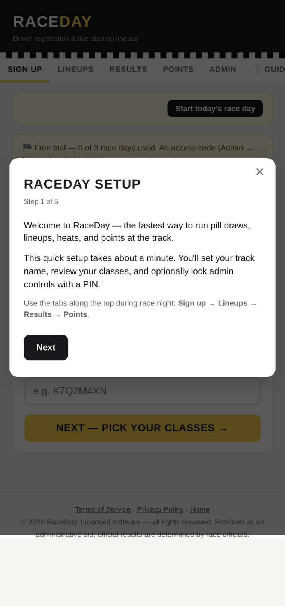
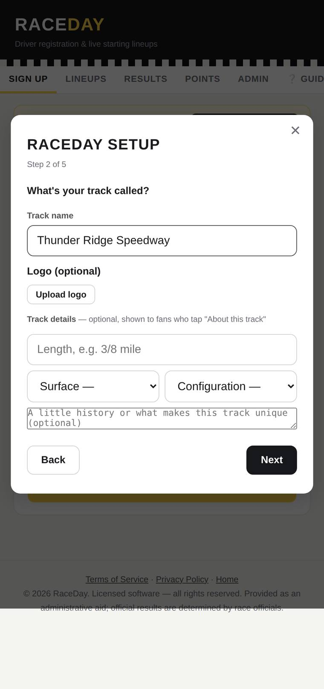
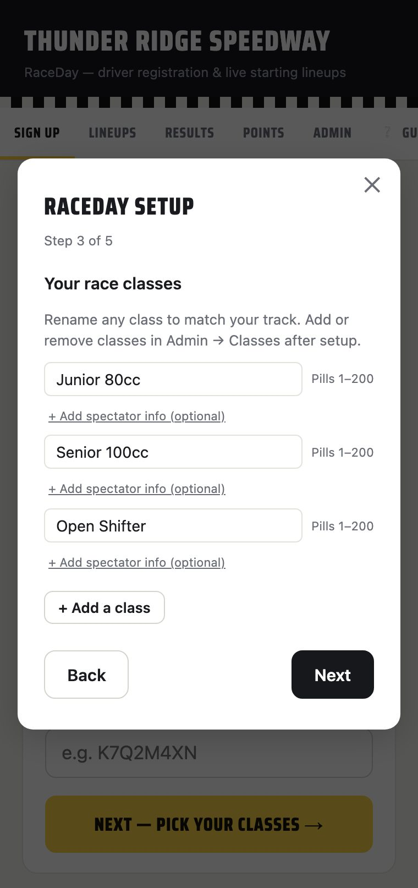
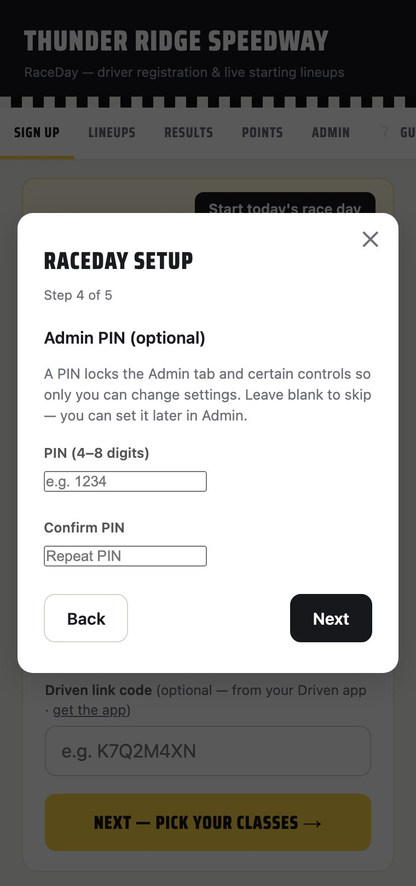
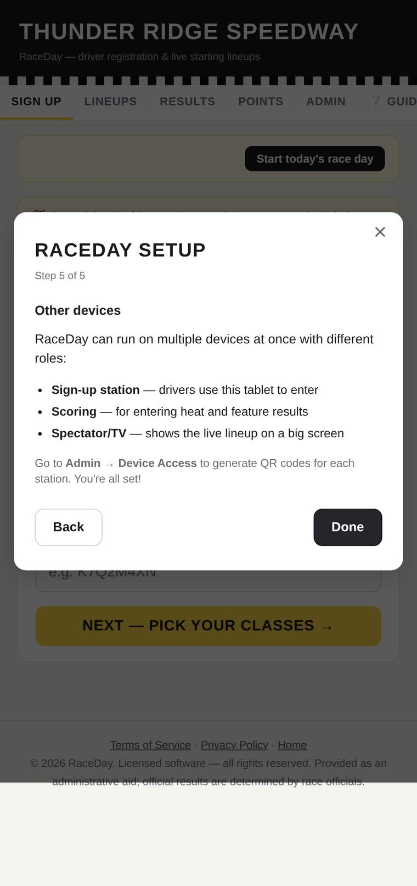
Adding drivers V1
Three ways to get a driver on tonight's grid: they sign themselves up, an admin quick-adds them, or the whole field carries over from last week.
The driver self-service flow (Sign up tab)
- Driver opens the V1
Sign uptab and types their name. As they type, a match list (suggBox) filters the returning-driver roster — if their name is already in the system, tapping it fills both name and number for them. When the name field is empty, the full alphabetical roster shows as a tap-list instead, so a regular can find themselves with zero typing. - Type or confirm a vehicle number, then tap
Next. - Tap a chip for every class they're racing tonight. A class they're already entered in shows disabled ("— entered"). If the track requires consent, check the Terms/Privacy box.
- Tap
Draw my pill. A random, unused pill number is drawn per class and the screen reveals their grid spot for each. TapSign up the next driverto reset the form for the next person in line.
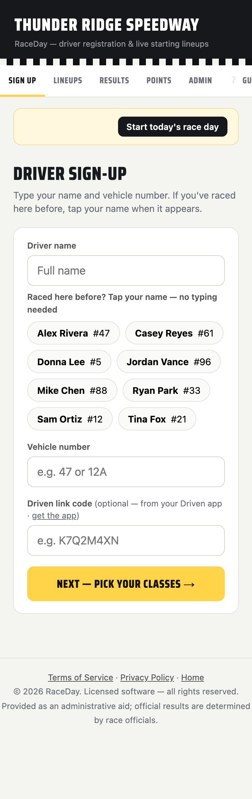
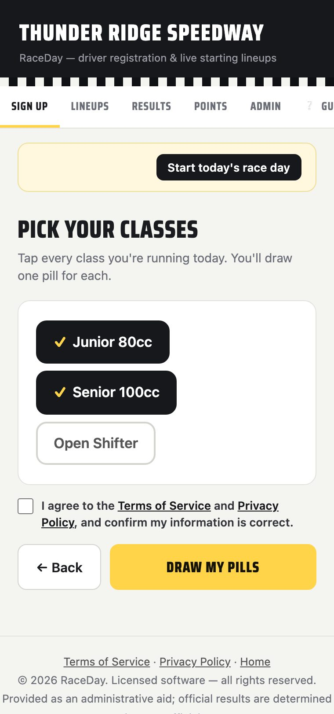
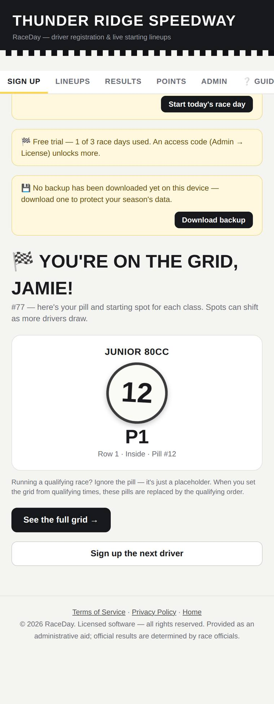
Admin adding drivers directly
For a driver who isn't self-serving on a tablet — Admin → Today's entries:
- Quick add from the driver book — pick a name and a class from two dropdowns, tap
Add + draw pill. Same duplicate-number and pill-exhaustion checks as the self-service flow. - ↻ Re-enter last race day's field — one tap re-enters every driver from the previous archived night into tonight's classes with fresh pills. The fastest way to start a normal Tuesday-to-Tuesday club night.
- The entry list itself is fully editable inline: fix a car number, move a driver to a different class, nudge their grid spot with the ▲▼ arrows, or remove them (their pill returns to the pool).
Self-serve kiosk mode
For a shared tablet at the sign-up table that only ever shows the sign-up screen — Admin →
Multi-device sync → check "Self-serve kiosk mode on registration devices." This hides the
whole navigation bar on any device set to the register role, so racers can
only reach sign-up, nothing else. (Requires multi-device sync to be turned on first — see
Roles & multi-device.)
Running a race night, start to finish V1
Pick a race format — per class
Admin → Race classes → each class has its own Format dropdown:
| Format | What happens |
|---|---|
| Pill draw · 2 heats | The default. Random pill draw, two heat sets (the second inverted within the class), heat finishes decide who locks into the feature versus who runs a B-main. |
| Qualifying · 1 heat | One qualifying round instead of two heat sets — same feature/B-main split downstream. |
| Qualifying · straight to mains | No heats at all. Standings come straight from the pill/qualifying order — top seeds lock into the feature, the rest split into B-main(s). |
Any class can also run a qualifying-time-based grid instead of a blind pill draw — on the
Lineups tab, tap ⏱ Qualifying times, type each driver's best lap time, tap
Save times, then Set grid from times → to reorder
pills so the fastest lap starts on the pole.

Heat inverts, main inverts & B-main modes
Also on the class row: a heat-start invert (standard / invert top N whole-field / invert top N per-heat) and separate main-invert counts that flip the front rows of the feature and/or B-main after heats are scored — who qualified doesn't change, only where they line up. B-main structure is a track-wide default (Admin → Race format): single (one B-main, the rest are cut), parallel (several B-mains, everyone transfers, nobody's cut), or cascade (tiered mains that climb toward the feature).
Lineups & TV display
The Lineups tab (renderGrid) shows the live grid for every class. Toolbar:
📺 TV display, 🖨 Print / save PDF, and
📥 Import from timing for pulling in an external timing-vendor CSV. TV
display goes full-screen and auto-rotates through every heat/B-main/feature slide every 12
seconds — plug the device into a TV over HDMI, or cast it. Tap any driver's name anywhere to open
their spectator-facing card.

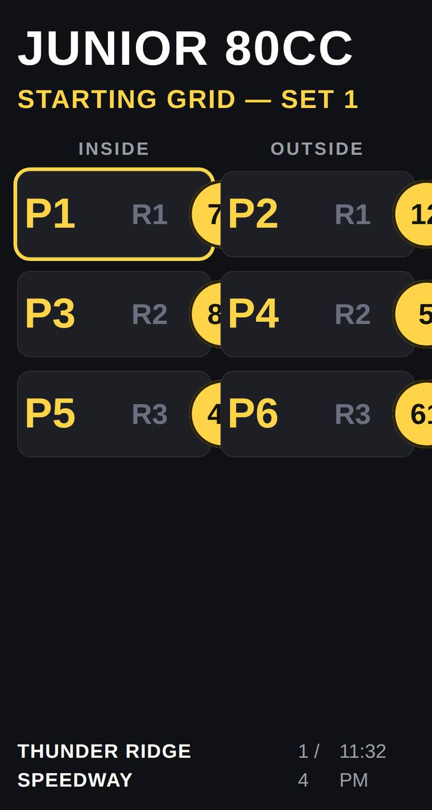
Scoring & the results governance bar
- Results tab → per class: toggle whether tonight counts for points, then enter heat finishes via the dropdown selects (1st, 2nd… or DNF/DNS/DQ). A live standings table totals heat finishes as they're entered.
- Once every heat finish is in, the B-main(s) and feature unlock in the order the class's B-main mode determines.
- Every class carries a governance bar above its results:
📝 Unofficial↔✅ Official,🔒 Lock results(blocks further edits),Override(only appears once locked — lets an admin edit anyway, logged separately in the audit trail as an override),💾 Save version(snapshots the current finishes, up to 20 kept), and a↺ Restore version…dropdown to roll back to any snapshot.
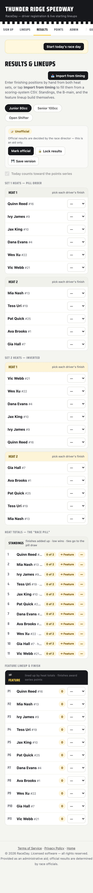
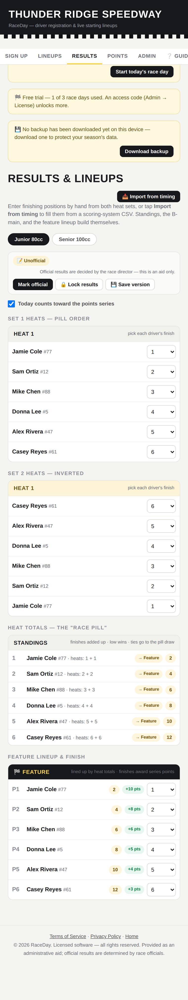
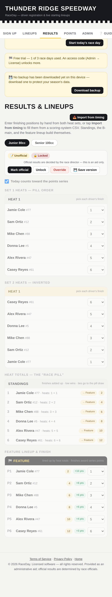
Ending the night
Admin → Danger zone → 🏁 Start a new race day. Confirms, offers a backup
download, then archives tonight into Race day history (immutable snapshot — standings, feature
results, points all frozen), clears the board for next time, fires an automatic cloud backup if
it's turned on, and — if any driver tonight has a linked Driven profile — offers to share results
with Driven. If a class's points aren't finished, the archive warns and lets you cancel rather than
losing anything.
Points & season standings V1
Points calculate automatically from the feature finish once a class is marked as a points race for the night. Pick a table under Admin → Points series: Standard (10-8-6-5-4-3-2-1), F1-style (top 10, 25 down), Full-field linear (last place scores 1, first scores field size), Podium only (5-3-1), or type a fully custom table.
The Points tab totals every night on record for a class — by class name, not class ID, so a renamed or long-retired class still keeps its history. One tab per class, a status line (🟢 tonight already counted / 🟡 tonight counts but isn't finished / ⚪ tonight doesn't count), then the standings table sorted by total points.
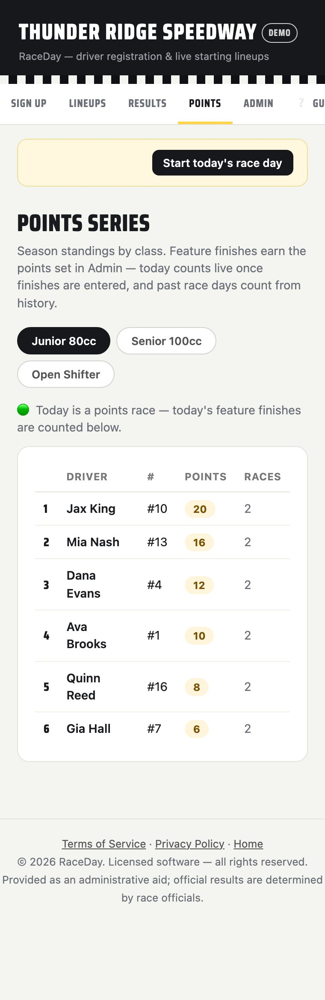
Roles & multi-device setup V1
| Role | Sees | Typical device |
|---|---|---|
| Admin | Everything | The track's main tablet/laptop |
| Register | Sign-up only (can be kiosk-locked) | Sign-up table tablet |
| Scoring | Lineups, Results, Points — no Admin or Sign-up | Scoring tower |
| TV | Lineups only, auto-opens the TV overlay on load | A screen bolted to the wall |
| Viewer (spectator) | Lineups only, strictly read-only — can never reach Admin, PIN or not | A fan's own phone, via QR poster |
| Operator | Everything, but starts read-only ("watching") until Take control — its own separate Operator PIN | Remote support |
A device gets its role from a join link generated at Admin → Multi-device sync — separate links for Registration, Scoring, and TV, a private Operator link, and a printable Spectator QR poster. A staff device already assigned a role can also switch roles in-app (PIN-gated if a PIN is set).
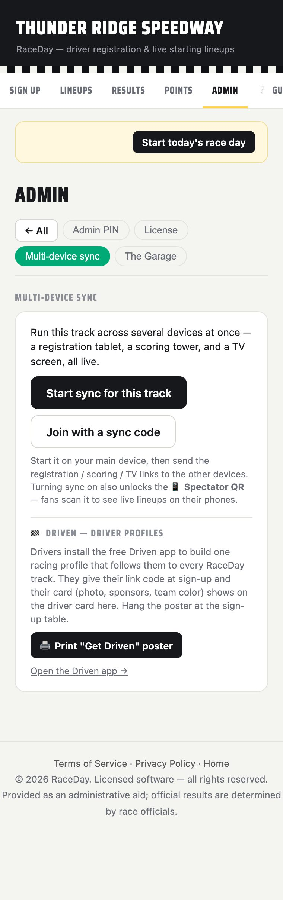
Cloud backup & restore-by-code V1
- Admin → Backup & export → check Cloud backup. A confirm dialog spells out exactly what's sent (classes, driver book, lineups, results, season history) and what's never sent (admin PIN, license code, sign-up consent records).
- Backups fire automatically every time a race day is archived, plus on demand via
☁ Back up now. - To restore onto a new or replacement device: enter the one-time restore code you were given into the Restore field in the same section. The device keeps its own license and PIN — a backup never transfers those.
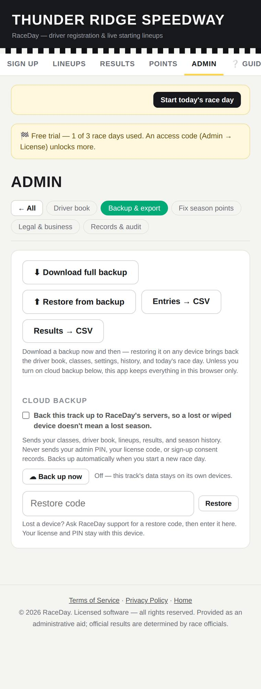
Other admin tools, at a glance V1
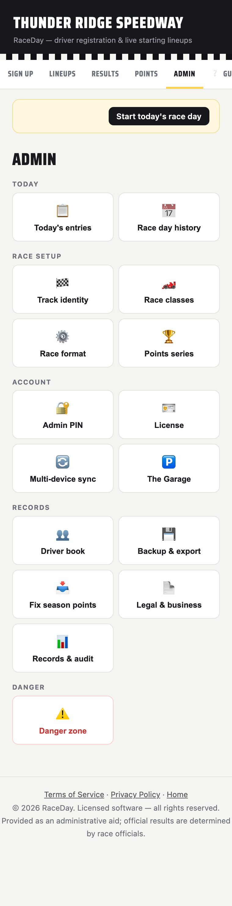
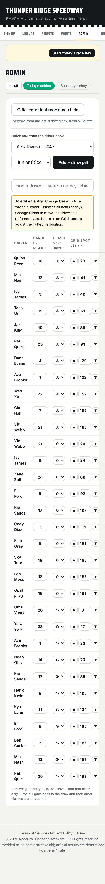
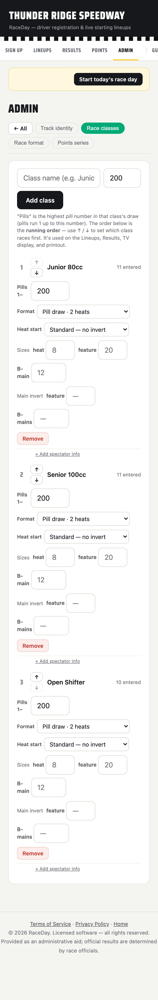
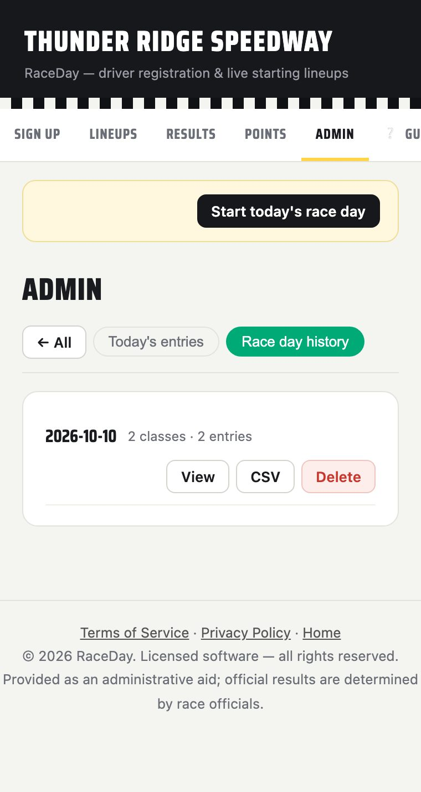
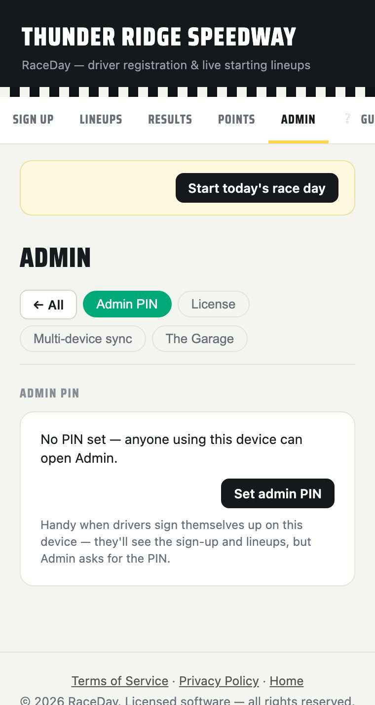
Also under Admin: Track identity (name/logo/length/surface), Driver book (the persistent roster), Legal & business (Terms/Privacy legal names, consent requirement), License (activation/trial status), and Records & audit (the acceptance log plus a full audit trail of every override, lock, and imported-race edit).
New RaceDay (V2)
A ground-up rewrite — same engine under the hood (points math, heat logic, cloud backup all byte-identical to V1), reworked navigation and three big changes worth knowing about: a single-screen sign-up, an always-visible Race Control status bar, and a choice of three scoring styles.
Setting up a new track V2
Same five steps as V1, same field names — the only difference is where it lives: V2 opens the wizard as a slide-up sheet instead of a full-page modal.
- Fresh admin device, first load — the wizard opens automatically, exactly like V1. It can also
be re-opened later from Admin → Danger zone →
Re-run the setup wizard. - Step 1 — Welcome. Same overview card as V1.
- Step 2 — Your track. Identical fields to V1: name (required), logo, length, surface, configuration, history.
- Step 3 — Race classes. Same add/rename/reorder list, same rename-warning about splitting points history, plus a quick-add chip row pulling from any previously deleted class ("class library").
- Step 4 — Admin PIN. Same optional 4–8 digit PIN.
- Step 5 — Done. Tap
Doneto close the sheet and land on the app.
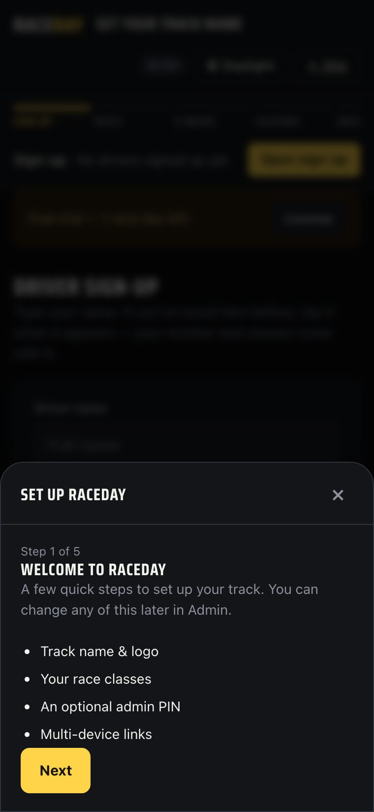
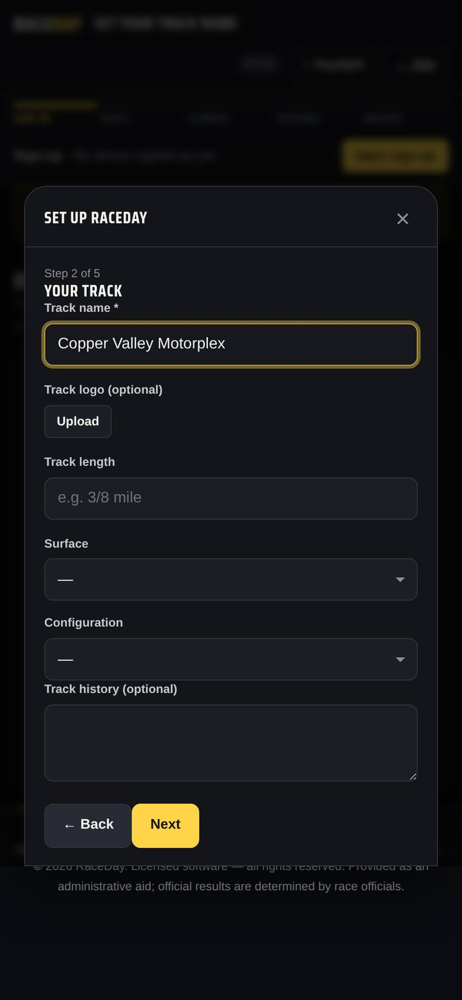
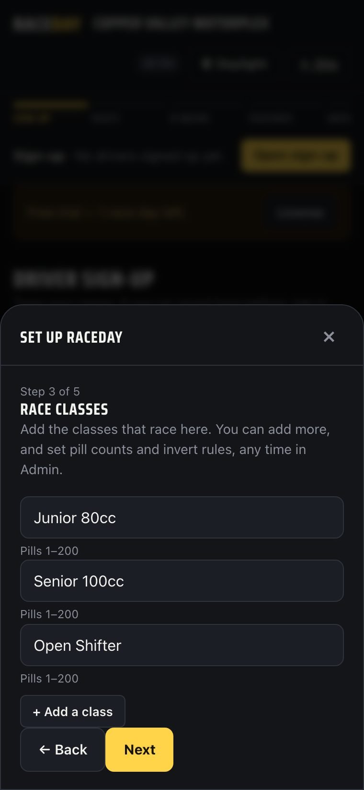
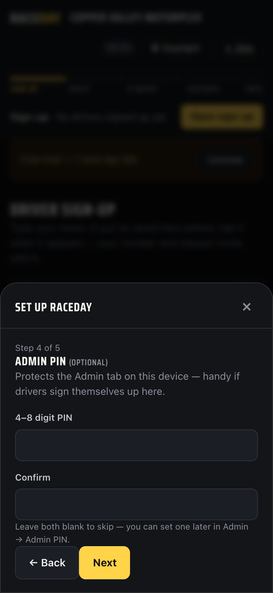
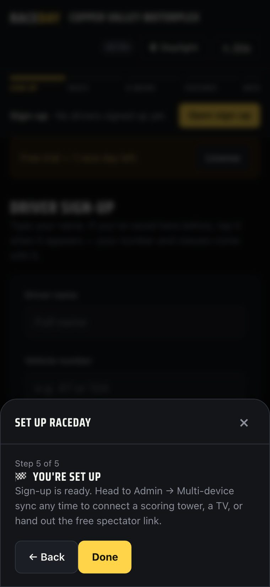
Adding drivers V2
This is the biggest real difference from V1. Sign-up is one screen, not three.
- Type a name into the single sign-up card. A live match list filters the roster as you type, and — while the name field is empty — the full alphabetical "raced here before?" list shows instead, same as V1.
- Type a vehicle number. There's no "Next" step: as soon as name and number are typed, the class chips render live below, right on the same screen. Tapping a returning driver's name also pre-ticks whichever classes they ran last time.
- Tap the class chip(s), tap
Draw my pills. The same card swaps in place to show the pill reveal — still one screen the whole time.
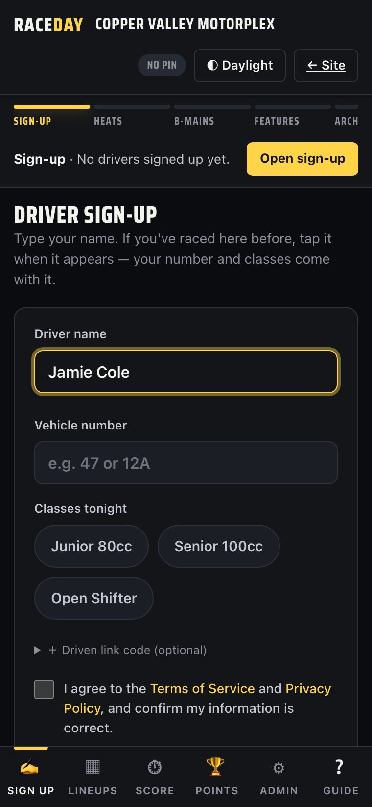
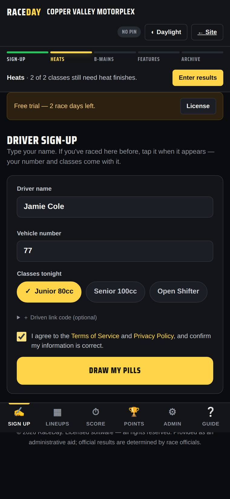
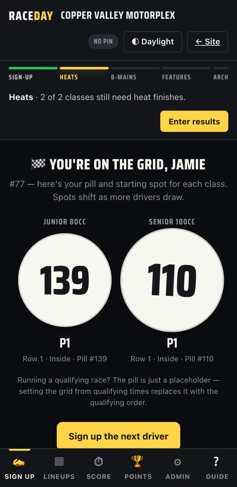
Admin-side quick-add, re-enter-last-night, and the editable entry list under Admin → Today's entries all work identically to V1.
Running a race night, start to finish V2
The Race Control bar
New in V2: a persistent status strip at the top of every screen (except spectator/TV views) walking five phases — Sign-up → Heats → B-mains → Features → Archive — computed live from what's actually been entered, with one context-right button to jump straight to the next thing that needs doing. V1 has no equivalent always-on progress indicator; this is worth calling out on camera as the "at a glance, what do I do next" feature.

Race formats, inverts & B-main modes
Identical to V1 — same three per-class formats (Pill draw · 2 heats / Qualifying · 1 heat / Qualifying · straight to mains), same heat/main invert controls, same single/parallel/cascade B-main modes, all under Admin → Season setup → Race classes / Race format. Qualifying-time entry works the same way too, just opens as a sheet instead of a modal:

Lineups & TV display
Same grid, same TV overlay (12-second auto-rotate, lock/prev/next controls) — plus one addition: a per-class filter dropdown above the grid, so a device can show just one class instead of every class stacked in one long scroll. TV slides also gained two new slide types once there's something to show: a results slide and a season-points slide, so the screen doesn't sit on an empty grid once racing is done for the night.
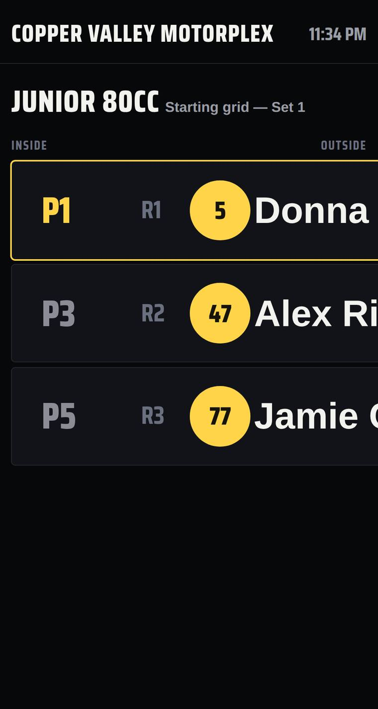
Scoring — three modes, your choice, per device
The other headline V2 change. Every class's Score screen has a segmented control — pick a style per device, any time, and it doesn't affect what anyone else sees:
Tap order
A grid of driver cards. Tap in finishing order — each tap fills the next open position. Long-press to flag a DNF/DNS/DQ. Fastest for a scorer calling finishes out loud.
Number pad
Type each car number and hit Enter — it takes the next open slot, input refocuses automatically. Fastest for someone with a written running order in hand.
Dropdowns
One select per driver, like V1's only mode. The only style that also shows transfer-origin tags and per-row heat totals inline — pick this one when you need that extra detail visible while scoring.
All three write to the exact same underlying result — switch mid-night without losing anything.

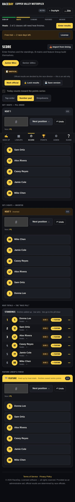
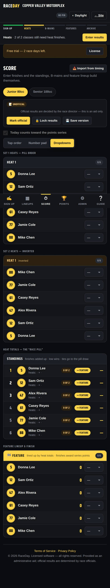
Governance bar & ending the night
Same governance controls as V1 (Official/Unofficial, Lock, Override, Save/Restore version), and
the same archive flow — reachable from Admin → Danger zone or straight from the Race Control bar's
final 🏁 Archive & start next race day button once every feature is
scored.
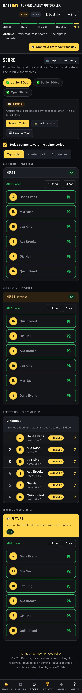
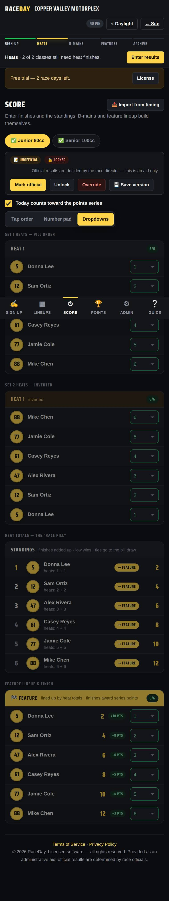
Points & season standings V2
The calculation engine is unchanged from V1 — same presets, same by-class-name season aggregation. Just note there are two different screens that share the word "Points": the main-nav Points tab (season standings, what most roles see) and Admin → Season setup → Points series (the scoring-table configuration, admin only). They're easy to mix up — "open Points" means different things depending which one you mean.
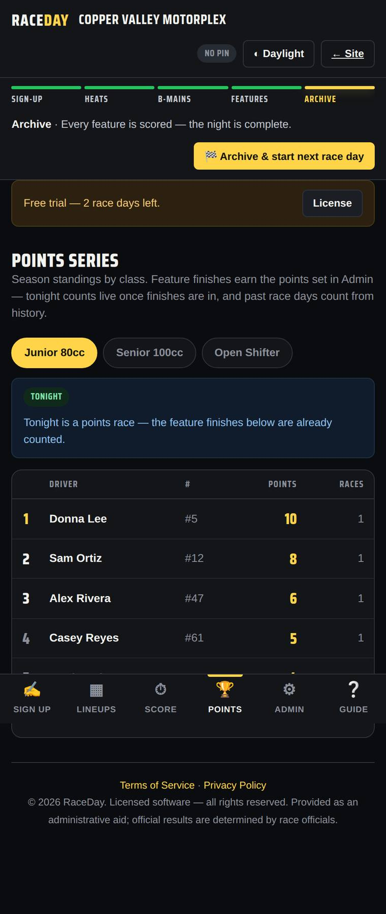
Roles & the responsive shell V2
Same six roles as V1 (admin, register, scoring, tv, viewer, operator), same join-link and Spectator QR mechanism under Admin → Season setup → Multi-device sync. The visible difference is the shell itself: V2 has a real breakpoint at 900px width — a left-hand navigation rail on tablet/desktop, a bottom tab bar on phone, built from the same navigation data so the two never drift out of sync.
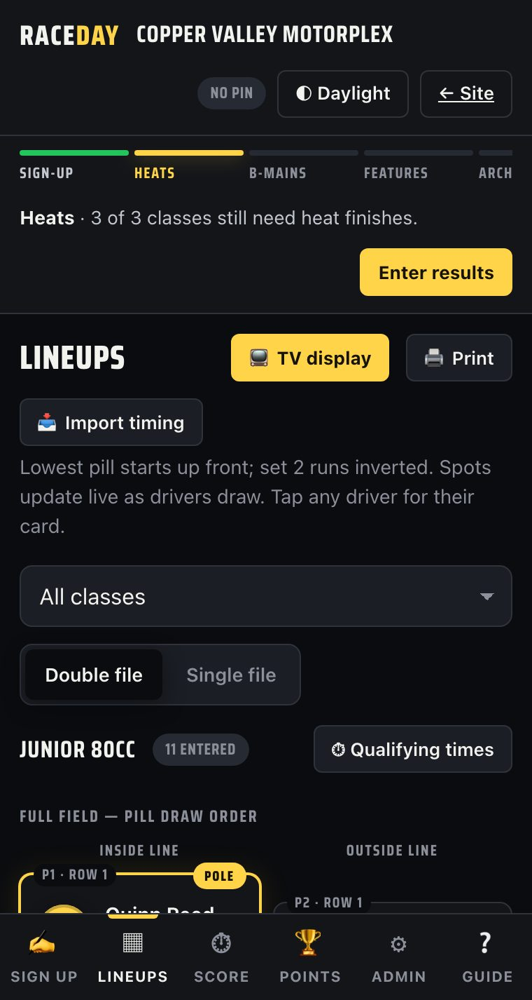
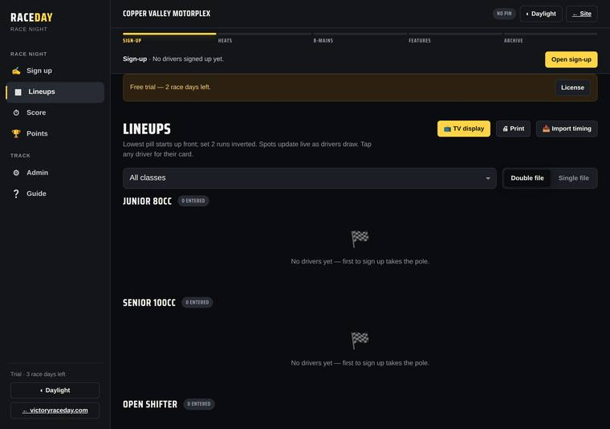
Cloud backup & restore-by-code V2
Identical mechanics and copy to V1 — the whole cloud-backup engine ported verbatim. Lives at Admin → Account → Backup & export.
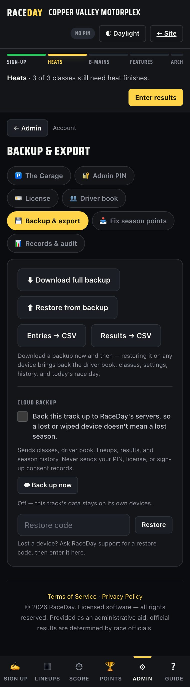
Other admin tools, at a glance V2
Admin is reorganized into four doors instead of V1's one flat tile grid — here's where everything moved:
| Door | Sections |
|---|---|
| Race night | Today's entries · Race day history |
| Season setup | Track identity · Race classes · Race format · Points series · Legal & business · Multi-device sync |
| Account | Admin PIN · License · Driver book · Backup & export · Fix season points · Records & audit |
| Danger zone | Start a new race day · Load demo · Set up for a new track · Erase everything |
Admin home also gained a search box that jumps straight to a section by keyword (typing "invert" or "b-main" goes straight to the relevant control) — a genuinely new convenience, not a V1 feature.
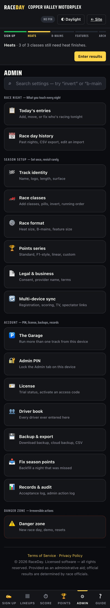
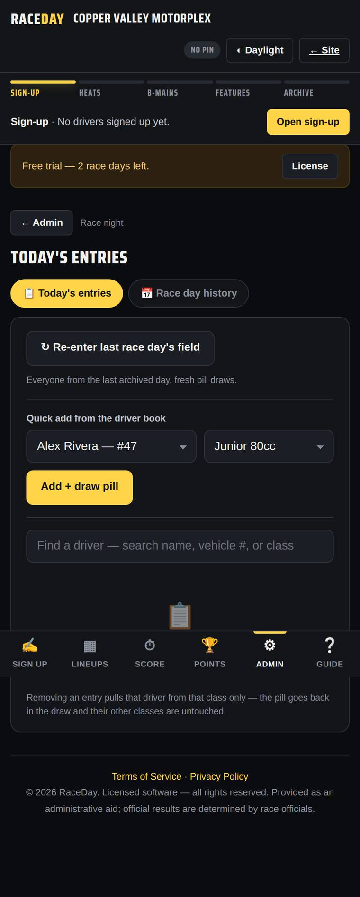
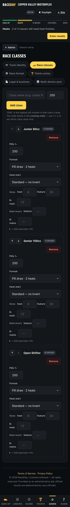
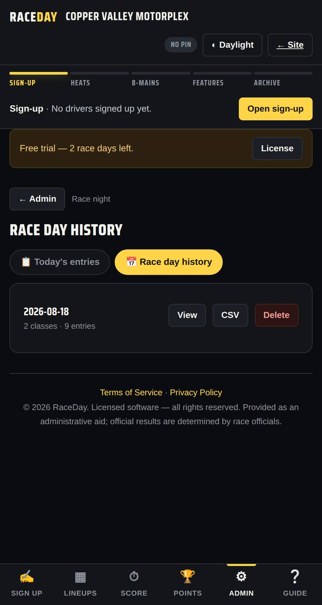
Driven
A separate app, not a RaceDay tab. One profile a driver owns and carries between every track that runs RaceDay — their identity, their photo and sponsors, their full career history in one place.
Creating a profile Driven
- First time a driver opens Driven, a "Welcome to Driven" screen appears automatically and can't be dismissed without either creating a profile or restoring an existing one.
- Type a name (the only required field). Email, hometown, and age are optional — email is labeled specifically "for backup."
- Tap
Create my profile. A unique profile ID is generated behind the scenes; the driver lands on the Home tab.
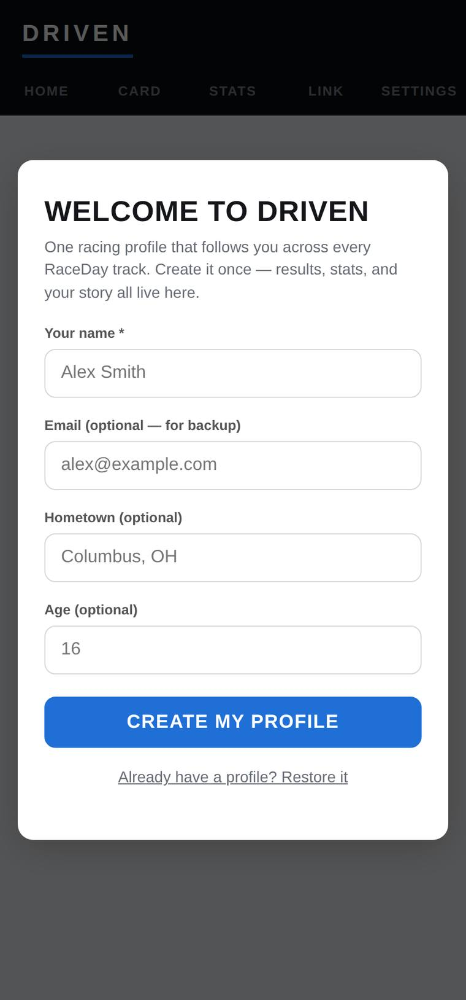
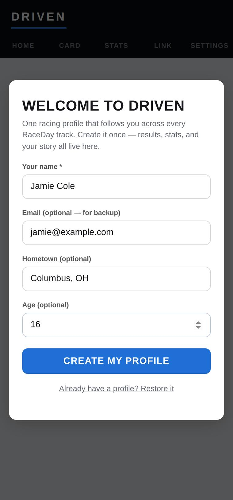
Home is where a driver lands every time after that, in the same broadcast look as their
public page: a banner in their team colors with the giant car number (or their header photo on
Pro), their photo in a team-color ring, Share my page /
View (or Publish my card before the first
publish), a prompt to link their first track if none yet, the latest result, stat tiles
(starts, wins, top 5, average finish), and their recent races. Pro adds a season-form line and
milestone badges.
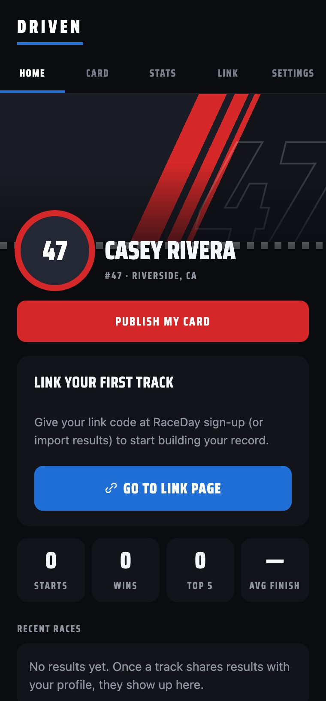
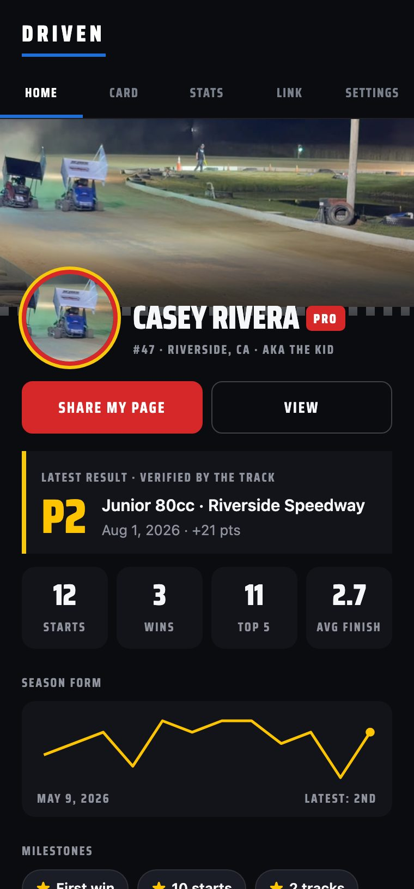
The driver card Driven
The Card tab is a live preview of the driver's public page — exactly what fans and sponsors see — followed by the Share with tracks, Your public page and plan boxes. All editing happens in Settings, not on this screen itself. Free tier gets the banner in the driver's team color, stat tiles and results; Pro adds the PRO badge, a header photo, two accent colors, a season-form line and milestone badges.
Photo upload
- From Settings, tap
Upload— opens the device's photo picker. - The image is automatically center-cropped to a square and downscaled — no separate crop step.
- A 60KB size gate rejects anything too heavy with a plain "try a smaller image" message — nothing partial gets saved.
Removeclears the photo back to an initials disc.
Header photo & team colors (Pro)
- Settings → Header photo (Pro) →
Upload. The photo is center-cropped to a wide 3:1 banner automatically — a car-on-track shot works best. It replaces the striped banner on Home, Card and the public page. - Settings → Team colors: Pro gets three pickers — a primary and two accents. They drive the banner's three stripes, the double ring around the photo, and the latest-result stripe. Free keeps one team color.
Linking to a track & getting results in Driven
Two independent paths onto a driver's Home feed and Stats — plus the RaceDay-admin side that actually makes the live path work.
Path A — the live pull (the normal way)
- At the track, an admin links the driver's profile to their roster record (see below) and, after archiving a night, shares that night's results with Driven — one confirm dialog, one tap.
- In Driven, Settings →
Check for new results. That's the entire driver side of it — one button, no typing. - New results append to Home/Stats, tagged as verified since they came straight from RaceDay.

Path B — manual JSON import (for a night that never touched Driven's live pipe)
- Settings → paste a RaceDay results export into the text box →
Import. - Results come in tagged unverified — the UI says so plainly.
- A "Load demo results" button on the same screen seeds two fake tracks' worth of sample races, purely so a brand-new driver can see what a populated Home/Stats looks like before racing anywhere. Handy for trying the app out before you have a real race history.
The RaceDay-admin side, for a "how tracks connect to Driven" segment
- On a driver's card overlay (any race night, tap their name), an admin sees
🔗 Link Drivenif not yet linked, or↻ Refresh/Unlinkonce they are. - Tapping Link prompts for the driver's short link code (the driver reads it off their own Driven → Link tab). The card is pulled, sanitized, and stored on the roster record — read-only at the track, since editing always happens in Driven itself.
- After archiving a race night, if any finisher has a linked profile, a banner offers
Share now— one tap writes that night's results where Driven's "Check for new results" button will find them.
Publishing your card & the link code Driven
- Card tab →
Publish my card(or "Update published card" once already published). Fields are checked against size limits client-side first, so a doomed upload shows a clear "X is too long" message instead of silently failing. - First publish claims a short code — a handful of characters, extended automatically if there's a collision.
- Every later profile edit silently re-publishes, so the live card always matches what's on the driver's device. Just opening the app never re-publishes — so a second phone or browser with an older copy can't overwrite the card.
- The Link tab is the dedicated share screen: the code in large type, a QR code, and the list of tracks currently linked (with an Unlink per row — this only removes the track from the driver's list, it never deletes results already pulled in).
A driver can hand over their code two ways at a track: type it themselves into the optional
Driven-code field on RaceDay's sign-up screen, or read it aloud for an admin to type into the
driver-card 🔗 Link Driven prompt (see above).
Your public page Driven
Every published driver gets a shareable page at victoryraceday.com/d/?CODE (their
link code) — no app or account needed to open it. Share it from Home
(Share my page) or the Card tab's Your public page box. It shows the
latest result, starts / wins / top 5 / average finish, the full results list, bio, highlights,
crew and a sponsor wall — and every result on it was posted by a track's own RaceDay scoring,
never typed in by the driver.
Pro pages add the header photo, three team colors, the PRO badge, points standings worked
out from each track's posted results, a season-form line and milestone badges (first win, hat
trick, 10 starts…). A ‹ Back to my Driven button at the top takes the driver
back to the app (visitors without a profile see Get Driven — free).
Career stats Driven
The Stats tab computes live from every result on file — no separate "refresh" step. Three blocks: career totals, broken down by class, and broken down by track — races / wins / podiums for each.
Settings & backup Driven
All profile editing lives here: name, nickname, email, car number, team color (three on Pro),
photo, header photo (Pro), hometown, age, bio, highlights, sponsors and crew — one
Save changes button for the lot.
Below that: Download backup (the entire profile as a JSON file — the only full-fidelity way to move to a new phone, since race history never syncs anywhere else) and, in the danger zone, Delete my profile — a double confirmation, then a best-effort cleanup of the published card before wiping the device.
Combining races & fixing season points
Every track ends up here sooner or later: a night that never touched RaceDay, a joint event at another track, or two entries that should really be one. This section exists because getting it wrong means a driver's season total is silently off — and unlike most mistakes in the app, this one doesn't announce itself.
Both versions use the same tool for this: Admin → Fix season points (V1: under "Records." V2: under "Account," same name). The in-app copy states the rule plainly, and it's the one thing to get right before touching anything else:
Which scenario am I in?
A — A missed or away night
A real night of racing happened, but it never went through RaceDay — you started using the app mid-season, ran a night on paper, or your drivers raced a joint/away event at another track and you want it to count toward your season points.
B — Two entries that should be one
You already have two separate history entries for what should really be a single combined night or event — maybe entered twice by mistake, or a night was split into two record accidentally.
Scenario A — backfilling a missed or away night
The straightforward case. Both versions, same steps:
- Admin → V1: Records → Fix season points. V2: Account → Fix season points.
- Set the race date — the actual date the night happened, not today.
- Pick the class — this form only ever writes one class per saved entry. Running a multi-class away night into your season points means repeating this whole flow once per class.
- Build the driver list one of two ways: search each name and tap to add them one at a time,
or tap
+ Add whole classto bulk-seed everyone who's ever raced that class name (today's field plus every past history entry) at 0 points, then delete anyone who didn't actually race that night. - Type each driver's points for that night directly into their row.
- Tap
Save race night. If an entry for this exact class + date already exists, the app blocks the save and tells you to edit the existing one instead — this is the built-in guard against double-counting. - Done. The class's season total on the Points tab updates immediately — there's no separate "apply" or "publish" step.
Multiple missed/away nights for the same class need no special handling at all — just repeat this flow once per date. Season standings sum every history record that shares a class name automatically, so three backfilled nights and real archived nights for "Junior 80cc" all add together on their own. This is the normal, no-special-action way to fold a joint or away-track event into your season — enter it as its own dated entry using the same class name your home track uses.
Scenario B — merging two existing entries into one
There's no one-tap "merge" button for this — the form only ever adds or replaces a single entry, so combining two means doing the addition by hand. Six steps:
- Admin → Race day history. Open both entries and note every driver's points on each — this is the arithmetic you'll be doing by hand in a moment, so write it down or screenshot it.
- Only a single-class, hand-entered (imported) history entry shows an
Editbutton — a real, app-run archived race night never does. Tap Edit on one of the two entries you're merging. This loads it back into the Fix season points form. - The form now shows an edit banner: "Editing the entry from <date>. Saving replaces it — season points are recalculated, not added to." Note the behavior just changed — this save will replace, not add.
- Manually add every driver row from the other entry (search-and-add or
+ Add whole class), then, by hand, sum each driver's points from both original nights into that one Points field per row. The form does not add these for you. - Set the date to whichever makes sense for the combined record — the earlier night's date, or a date that represents the combined event.
- Tap
Save changes. Back in Race day history, delete the second, now-redundant entry. Check the Points tab to confirm the class total looks right — this is the step people skip and shouldn't.